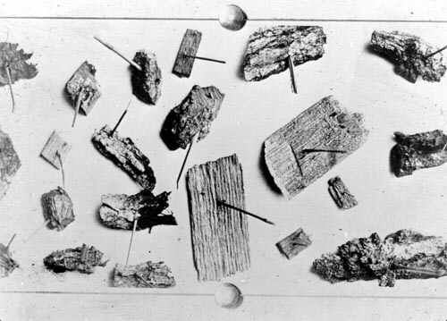

Saturday, February the 18th, 2006
back to: title, date or indexes
Readers who have been wallowing in Hooting Yard for a long time will know that we occasionally give Mrs Gubbins, the octogenarian crone (and criminal fugitive), the task of recommending other websites of interest. Contacting her the other day by metal tapping machine*, we received this reply:
“I am too busy knitting a decorative tea-cosy featuring scenes from The Twelve Caesars by Suetonius to go trawling the web on your behalf. However, if you go to Incoming Signals, you will find a plethora of links. If I wasn't knitting, I would certainly be looking up such enticing items as Charles Darwin's crab collection, early photographs of train, steamship and dirigible wrecks, the zodiacal methodology of scheduling horse castration by moon signs, and a video of an octopus battling a shark—and those are only four of the wonders you can find, and they are only from the first page. What are you waiting for? Now don't bother me again until my tea cosy is done.”
Mrs Gubbins does not lie. Incoming Signals is a very fine a place from where to begin a lengthy browse on the web. It is from here that you can be led, for example, to this terrific photograph of nails driven through wood by the mighty power of the wind!

*NOTE : Unkind people have been putting it about that Mrs Gubbins' metal tapping machine number is 666. This is not true.